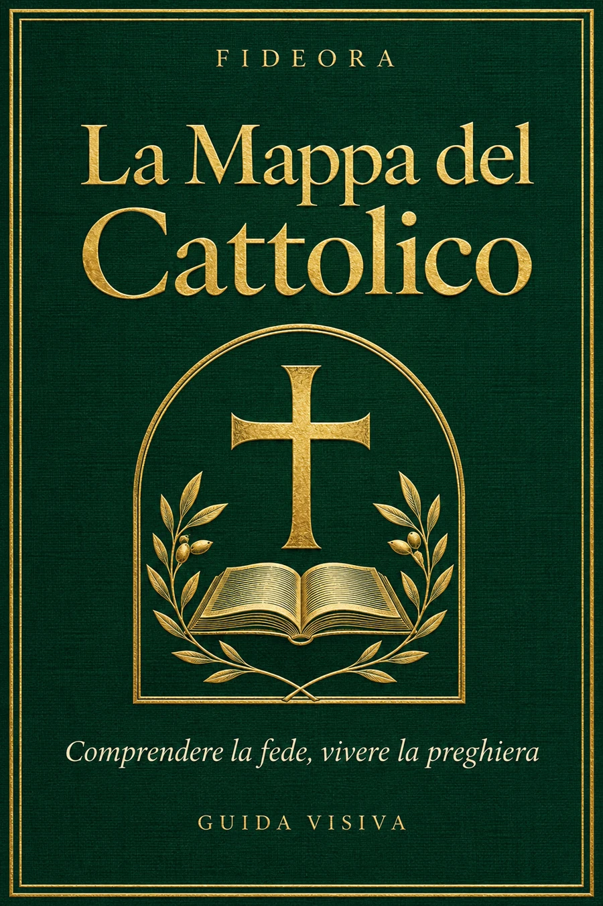
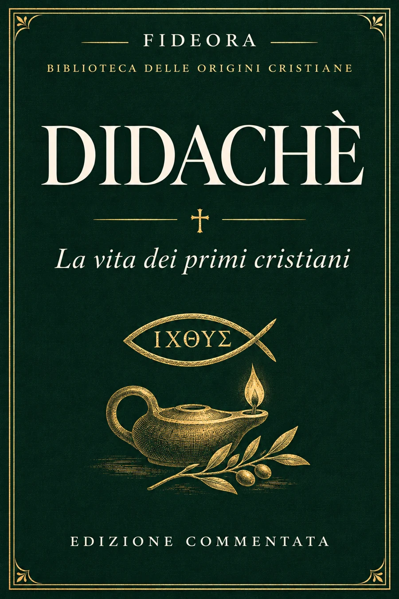
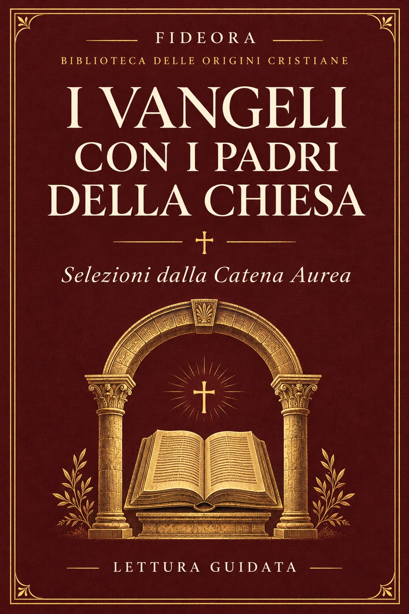
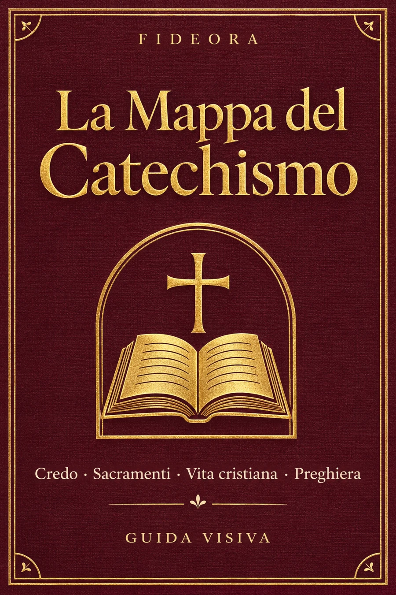
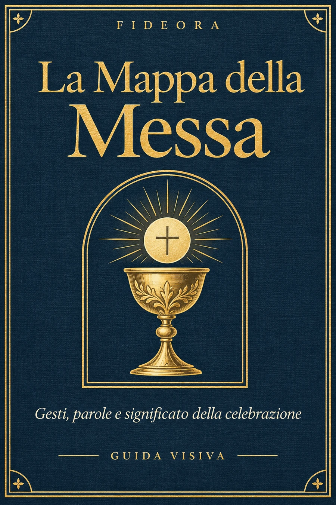

Comprendi
Collega i grandi temi della fede e trova un punto da cui iniziare.
La Mappa del Cattolico — Guida visiva alla fede
Dalla Messa alla preghiera, dai sacramenti alle domande di ogni giorno. Una guida visiva alla fede cattolica, con il Pacchetto Bibbia e Radici e due libri bonus dedicati al Catechismo e alla Messa.

Una mappa per comprendere. Un cammino da vivere.
La fede, con un filo chiaro
Una preghiera imparata da piccoli. Un gesto che si ripete durante la Messa. Una domanda sulla fede che torna, ma non sai da dove cominciare. La Mappa del Cattolico ti aiuta a mettere in relazione ciò che credi, celebri e vivi.
Un percorso che unisce spiegazioni semplici, schemi visivi e riferimenti per approfondire: dal Credo ai sacramenti, dalla vita della Chiesa alla preghiera quotidiana. Per iniziare con ordine e tornare sui temi che ti stanno a cuore.
Collega i grandi temi della fede e trova un punto da cui iniziare.
Scopri il significato dei gesti, dei simboli e delle celebrazioni.
Continua con il Catechismo, la Messa e le radici cristiane.
Trasforma ciò che scopri in riflessione e preghiera quotidiana.
Dentro il percorso
Mappe, collegamenti e pagine guidate: esplora alcune tavole dimostrative dei temi della nuova collezione.
Tocca una tavola per ingrandirla.
Anteprime editoriali dimostrative del percorso.
Il libro principale
Comprendere la fede, vivere la preghiera.
Credo, Trinità, Gesù Cristo e Chiesa: una visione d’insieme per collegare i temi essenziali.
Il significato dei sette sacramenti, i simboli e il loro posto nel cammino cristiano.
Un orientamento tra ascolto della Parola, celebrazione eucaristica, gesti e partecipazione.
Padre nostro, Rosario, silenzio e riflessione: strumenti per dare continuità al tuo cammino.
Domande guidate, riferimenti biblici e spazio per collegare la fede alle scelte di ogni giorno.
Bonus incluso · Pacchetto Bibbia e Radici
I quattro volumi della biblioteca, riuniti in un unico bonus: conosci le prime comunità, avvicinati ai Padri della Chiesa e scopri il mondo dei Vangeli.

01 · Le prime comunità
L’opera completa della collezione sulle prime comunità cristiane, con introduzione e note per accompagnarti nella lettura.
Edizione commentata
02 · I commenti antichi
Una lettura dei Vangeli attraverso la voce dei Padri della Chiesa e il patrimonio della Catena Aurea di san Tommaso d’Aquino.
Opera completa con commenti
03 · Comprendere il testo
Il pensiero di sant’Agostino e il De doctrina christiana per approfondire la comprensione delle Scritture.
Opera completa della collezione
04 · Il contesto storico
Gerusalemme e il contesto dei Vangeli attraverso gli scritti di Flavio Giuseppe, con spiegazioni e riferimenti.
Opera completa di approfondimentoIl Pacchetto Bibbia e Radici comprende questi quattro volumi, tutti in italiano e inclusi nell’offerta.
Altri due libri bonus inclusi
Due guide dedicate per continuare il percorso, incluse insieme al Pacchetto Bibbia e Radici.

Libro bonus incluso
Una guida visiva per orientarti tra le quattro parti del Catechismo: professione di fede, sacramenti, vita cristiana e preghiera.

Libro bonus incluso
Una guida per seguire il filo della celebrazione e comprendere meglio il significato dei suoi gesti, delle parole e dei momenti principali.
Il tuo compagno quotidiano

Uno spazio da portare con te, per leggere, collegare e raccogliere ciò che scopri nel tuo percorso.
Schermata reale di Fideora. Con questa offerta, La Mappa del Cattolico, il Pacchetto Bibbia e Radici, Mappa del Catechismo e Mappa della Messa sono inclusi gratis.
Due modi per iniziare
Scegli La Mappa del Cattolico con tutti i bonus, oppure Fideora con la stessa collezione in omaggio. Sette volumi in italiano, un unico percorso.
La collezione da conservare
Il libro principale e tutti i bonus inclusi
L’intera collezione a
Pagamento unico · Nessun abbonamento
Pagamento sicuro con Mundpay · La Mappa del Cattolico e tutti i bonus
Il percorso completo
Attiva l’app.
Libro e tutti i bonus sono gratis.
La stessa collezione completa.
Nessun costo aggiuntivo.
Paghi soltanto l’app
Abbonamento con rinnovo mensile
Scarica Fideora dall’App Store e scegli il piano mensile da €7,99 dentro l’app. Apple mostra prezzo e rinnovo prima della conferma.
Il libro principale e i sei volumi bonus vengono consegnati online: non è prevista spedizione. La collezione in omaggio è inclusa con l’attivazione dell’offerta Fideora presentata qui. Il piano mensile Fideora Premium costa €7,99 al mese. Su iPhone e iPad scarica l’app e scegli il piano mensile con Apple. Su Android e Web attiva il piano su Hotmart: 3 giorni di prova gratuita, poi €7,99 al mese salvo annullamento. Prezzo e rinnovo sono mostrati dal rispettivo servizio prima della conferma; puoi gestire o annullare l’abbonamento nelle sue impostazioni.
Prima di iniziare
Un percorso chiaro, fin dalla scelta.
Sì. La Mappa del Cattolico parte da una visione d’insieme della fede e ti accompagna tra sacramenti, Messa e preghiera con spiegazioni accessibili, schemi e riferimenti per continuare.
La collezione comprende La Mappa del Cattolico e sei volumi bonus, acquistabili insieme a €27 con pagamento unico. Fideora è l’app in abbonamento per leggere, studiare e pregare ogni giorno; con l’offerta presentata qui, la stessa collezione è inclusa in omaggio.
Ricevi La Mappa del Cattolico come libro principale. I bonus sono il Pacchetto Bibbia e Radici, con Didachè, I Vangeli con i Padri, Con sant’Agostino e Il mondo dei Vangeli, più La Mappa del Catechismo e La Mappa della Messa. In totale, sette volumi digitali in italiano.
È una guida visiva per comprendere e collegare i temi della fede cattolica. Si affianca alla Bibbia, al Catechismo e alla partecipazione alla vita della Chiesa; non è il testo integrale di questi documenti.
Dopo aver confermato nome ed email, apri la pagina di Fideora sull’App Store. Scarica o apri l’app su iPhone o iPad e scegli Fideora Premium mensile a €7,99 al mese. Apple mostra prezzo e rinnovo prima della conferma; puoi gestire o annullare l’abbonamento dalle impostazioni Apple.
Su Android puoi attivare Fideora tramite Hotmart e accedere dal browser, anche aggiungendo l’app alla schermata Home. Il piano mensile prevede 3 giorni di prova gratuita, poi €7,99 al mese, salvo annullamento. Il pulsante riconosce il dispositivo; puoi anche scegliere Android / Web nell’offerta.
Dopo la conferma dell’acquisto ricevi le istruzioni di accesso all’email indicata nel primo passaggio dell’ordine. Con l’offerta Fideora, la collezione completa è inclusa dopo l’attivazione dell’abbonamento. Per assistenza puoi scrivere a support@fideora.app.
La tua prossima pagina
Un libro principale, sei volumi bonus, un unico percorso.